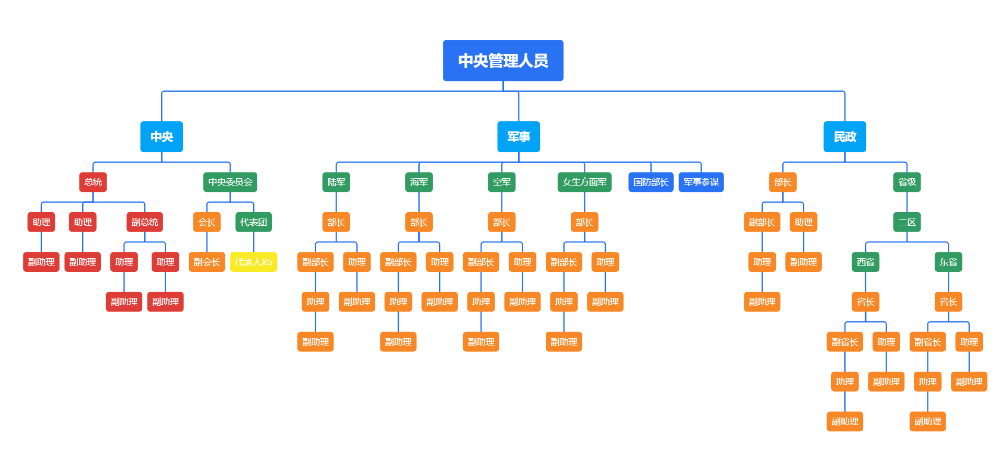
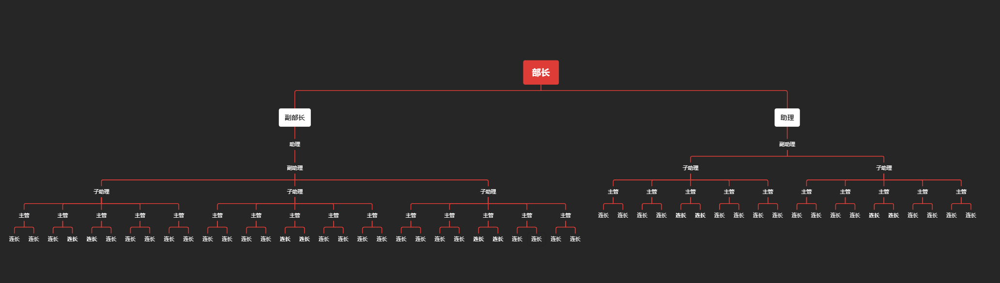
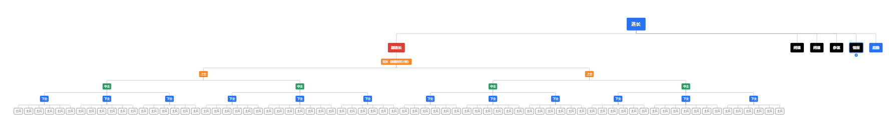

北金人民政府是孔维谦于五年级下学期成立的
公民可以随时加入北金人民政府
现任领导人：孔维谦
政府权威性极高，北金人民政府是北金国的主要掌权政府。
了解我们的政府规则和相关说明，为所有公民创造一个公平、友好的环境
禁止侮辱北金人民政府，禁止自封官职。
1.老北金牛逼 2.巴豆好吃😋
北金人民政府每一个选择都是正确的
北金人民政府没有经济系统，任何人都可以零元购。
遇到不文明行为或违法公民，可在微信群里@官方人员举报，官方人员会及时处理。
服务器讨论主要靠微信群等进行公民&官方人员间的谈论
北金人民政府每月举办多种活动，参与可获得丰厚奖励。关注公告和微信群通知，不要错过任何精彩活动！
我们拥有一支专业且富有激情的团队，致力于为所有公民提供优质生活体验
北金人民政府创始人，致力于打造最好的政府。
负责维护服务器与国家秩序。
负责维护北金人民政府秩序，处理国家纠纷。
负责维护北金人民政府秩序，处理国家纠纷。
解决饮水机、厕所等地区领土保护及纠纷解决
帮助海军部长解决饮水机、厕所等地区领土保护及纠纷解决
带领女生，负责维护北金人民政府秩序，处理国家纠纷。
负责维护二西省秩序，更好的传达消息
负责维护二东省秩序，更好的传达消息
负责维护北金人民政府民众方面，更好的帮助人民
负责帮助总统一些事情



北金国（以下简称 “本国”）及其人民政府为虚构创作主体，仅用于文学、影视、游戏、学术研究等非现实场景的设定呈现，不对应现实世界任何主权国家、地区、政治实体或行政机构，亦不涉及任何现实政治、经济、法律及社会事务。
为明确虚拟设定与现实的边界，特作如下免责声明：
虚拟属性声明：本国的领土、政体、法律体系、政策内容、机构设置及 “公民” 身份等均为虚构设定，与现实世界的地理疆域、国家主权、法律制度及公民权利无任何关联，不得作为理解现实国家治理、国际规则或法律权益的依据。
信息准确性免责：本国及政府相关的设定内容（包括但不限于历史背景、政策细则、数据统计等）可能因创作需求进行调整，不保证完全一致性、完整性或 “合理性”，仅服务于具体创作场景，不构成任何事实性陈述或承诺。
现实责任豁免：任何个人或主体基于本国虚拟设定所作出的现实决策，其产生的全部风险与后果均由行为人自行承担，本国 “政府” 不承担任何现实层面的法律责任、经济赔偿责任或道义责任。
现实权益无关联：本国 “法律”“政策” 不具备现实法律效力，“公民权利”“行政服务” 等虚拟权益无法对应或转化为现实中的公民权、财产权、行政救济权等合法权益，任何基于虚拟设定主张现实权益的行为均无法律依据。
知识产权与使用规范：本国及政府的设定内容受创作方知识产权保护，未经授权不得擅自用于商业盈利、恶意传播或歪曲解读；非商业用途的引用需注明 “虚拟设定” 属性，避免误导公众混淆虚拟与现实。
本声明自发布之日起生效，北金国（虚拟）人民政府对本声明内容拥有最终解释权。若因违反本声明或混淆虚拟与现实导致的任何纠纷，均由行为人自行承担全部责任。